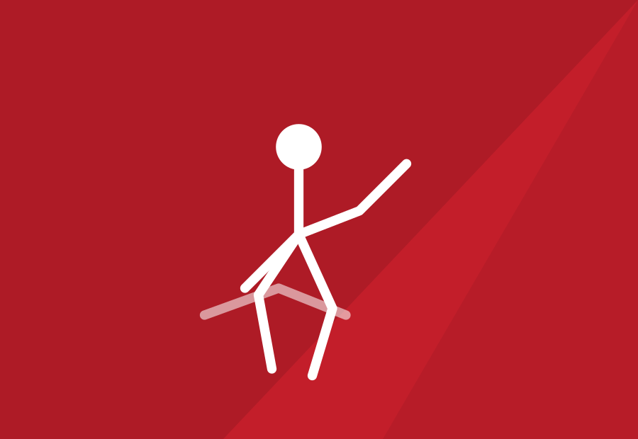
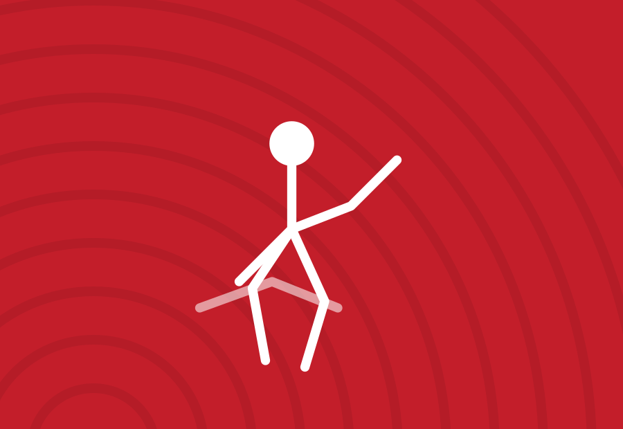

Ju-Jitsu
Fighting system e ne-waza sul tatami di Vezzano Ligure: dai fanciulli agli agonisti dei campionati FIJLKAM.
La disciplina
Un tatami aperto a tutte le età
Il ju-jitsu della Polisportiva Prati Fornola unisce la componente in piedi del fighting system con il lavoro a terra del ne-waza, seguendo i programmi tecnici FIJLKAM. Si comincia da piccoli, con giochi di equilibrio e prime cadute, per arrivare gradualmente al combattimento regolamentato e alla preparazione agonistica.
Il nostro team di maestri segue ogni anno atleti che partecipano a criterium interregionali e ai Campionati Italiani FIJLKAM, ma la porta della palestra resta aperta soprattutto a chi vuole avvicinarsi per la prima volta a uno sport da combattimento in un ambiente sicuro, rispettoso e ben seguito.
Cosa si impara
Cadute e rotolamenti, proiezioni, leve e strangolamenti in sicurezza, disciplina del tatami, rispetto per il compagno di allenamento: il programma segue il percorso a cinture riconosciuto dalla federazione, con passaggi di grado ed esami periodici.
Materiale necessario
Per la prova gratuita bastano una tuta comoda o un judogi se già in possesso. Per chi prosegue è richiesto il judogi da ju-jitsu e il paradenti per l'attività di combattimento.
A colpo d'occhio
- Età: dai 5 anni, nessun limite massimo
- Livello: principianti e agonisti
- Sede: Palazzetto comunale, Vezzano Ligure
- Squadra agonistica: partecipazioni a criterium regionali e Campionati Italiani FIJLKAM
Orari
Corsi divisi per età e categoria
Il tatami è aperto tre pomeriggi a settimana. La prima lezione di prova è sempre gratuita: presentati dieci minuti prima dell'orario del tuo gruppo.
| Categoria / età | Lunedì | Mercoledì | Venerdì |
|---|---|---|---|
| Piccoli draghi · 5–7 anni | 17:00–18:00Lun · propedeutica | — | 17:00–18:00Ven · propedeutica |
| Fanciulli · 8–10 anni | 18:00–19:15Lun · tecnica | 18:00–19:15Mer · tecnica | 18:00–19:15Ven · tecnica |
| Ragazzi · 11–14 anni | 19:15–20:30Lun · fighting | 19:15–20:30Mer · ne-waza | 19:15–20:30Ven · fighting |
| Cadetti / Juniores · 15–17 anni | 20:30–21:30Lun · agonisti | — | 20:30–21:30Ven · agonisti |
| Adulti / self-defense · 18+ | — | 20:30–21:30Mer · autodifesa | — |
Lo staff
Maestri
Il team tecnico che segue gli allenamenti e la squadra agonistica.
In evidenza
Il tatami in immagini
Alcuni scatti che raccontano lo spirito del gruppo, oltre alla fotogallery qui sotto.

Fotogallery
Un anno di tatami
Allenamenti, esami di cintura e trasferte della squadra agonistica.
Gare e risultati
Gare e risultati Ju-Jitsu
I risultati delle nostre atlete e dei nostri atleti nei criterium e nei campionati FIJLKAM.
Calendario eventi
Gare e appuntamenti Ju-Jitsu
Sali sul tatami: prima prova gratis
Vieni a conoscere i nostri maestri in uno dei nostri allenamenti pomeridiani.